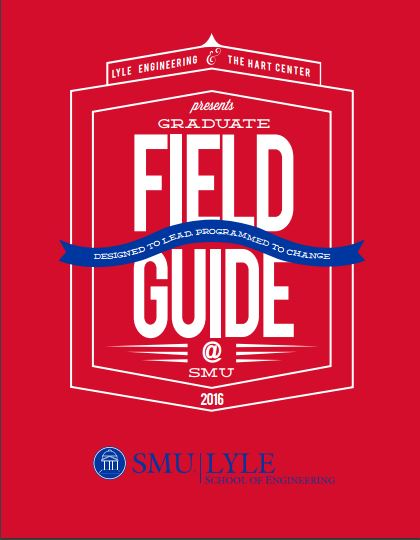

The introduction of technology has pushed has further and made the impossible possible.

When it comes to innovation, don’t limit it to the future.

Lacking resources does not mean there is no innovation.
Quiz on Video #{{ctrl.videoquiz}}
1. What’s the response to a bad idea?
A worse idea to make the bad idea seem better.
Nothing.
A better idea.
A stolen idea.
2. When was the first use of the word “technology�?
1909
1829
1809
1759
3. What is Kelly’s working definition of Technology?
Anything useful that a human mind makes.
Anything made after you were born.
Anything that humans have dreamt about.
Anything that a human found.
4. How are you going to ensure that you can use your leadership skills to drive process and innovation? [free-text answer]
5. Do you feel that this video has been helpful in your leadership development journey? [free-text answer]
A worse idea to make the bad idea seem better.
Nothing.
A better idea.
A stolen idea.
2. When was the first use of the word “technology�?
1909
1829
1809
1759
3. What is Kelly’s working definition of Technology?
Anything useful that a human mind makes.
Anything made after you were born.
Anything that humans have dreamt about.
Anything that a human found.
4. How are you going to ensure that you can use your leadership skills to drive process and innovation? [free-text answer]
5. Do you feel that this video has been helpful in your leadership development journey? [free-text answer]
1. Why did Ito start up Safecast?
To measure the radiation and get the data out to the world after the magnitude 9 earthquake hit Japan.
A network for people that could not find family or friends that went mysteriously missing.
A way to measure tornado activity and get the data out to tornado enthusiasts.
None of these reasons.
2. What did Nicholas Negroponte famously say?
Establish or expire.
Publish or perish.
Circulate or croak.
Demo or die.
4. What are ways that you can contribute your skills as a budding engineer? [free-text answer]
To measure the radiation and get the data out to the world after the magnitude 9 earthquake hit Japan.
A network for people that could not find family or friends that went mysteriously missing.
A way to measure tornado activity and get the data out to tornado enthusiasts.
None of these reasons.
2. What did Nicholas Negroponte famously say?
Establish or expire.
Publish or perish.
Circulate or croak.
Demo or die.
4. What are ways that you can contribute your skills as a budding engineer? [free-text answer]
1. What does “jugaad� mean in Hindi?
Cheap buy.
Sloppy repair.
Broken beyond repair.
Improvised fix.
2. What are the three principles that Radjou gathered from frugal innovators?
Keep it simple, Do not reinvent the wheel, and think and act horizontally.
Keep it simple, Do not reinvent the wheel, and think and act vertically.
Keep it vague, Reinvent the wheel, and think and act vertically.
Keep it simple, Do not let go of the wheel, and think and act diagonally.
3. Have you ever come across a product that you thought was over-priced and came up with a more frugal option? If not, is there some product out there that you could recreate while keeping costs low? Include your estimated cost breakdown. [free-text answer]
Cheap buy.
Sloppy repair.
Broken beyond repair.
Improvised fix.
2. What are the three principles that Radjou gathered from frugal innovators?
Keep it simple, Do not reinvent the wheel, and think and act horizontally.
Keep it simple, Do not reinvent the wheel, and think and act vertically.
Keep it vague, Reinvent the wheel, and think and act vertically.
Keep it simple, Do not let go of the wheel, and think and act diagonally.
3. Have you ever come across a product that you thought was over-priced and came up with a more frugal option? If not, is there some product out there that you could recreate while keeping costs low? Include your estimated cost breakdown. [free-text answer]
Recommended Books
File Guide
